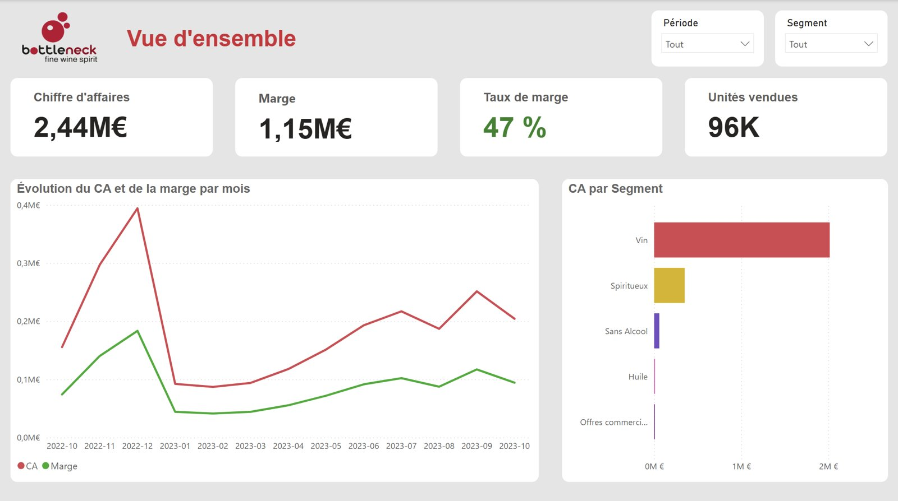

Paul Chipponi
Business Intelligence Analyst
Issu du sport de haut niveau, j’ai engagé une reconversion vers la data en rejoignant le parcours Business Intelligence Analyst d’OpenClassrooms, en alternance. Au démarrage, Excel et Power BI m’attiraient, tandis que SQL et Python me paraissaient les marches les plus hautes.
Ce portfolio retrace le chemin parcouru : sept études de cas, couvrant dix projets menés pour des clients fictifs mais réalistes, du nettoyage de données à la recommandation stratégique, jusqu’à l’usage critique de l’intelligence artificielle. Chaque fiche suit la même structure, du besoin métier aux limites de l’analyse, pour se lire en une ou deux minutes.
Compétences mobilisées par projet
| Projet | SQL | Python | Power BI | Power Query | Excel | RGPD | IA | Restitution |
|---|---|---|---|---|---|---|---|---|
| BottleNeck | Oui | Oui | Oui | Oui | Non | Non | Oui | Oui |
| UOI Games | Non | Oui | Non | Non | Oui | Non | Non | Oui |
| Les Plus Beaux Logis de Paris | Non | Oui | Non | Non | Non | Non | Non | Oui |
| Sanitoral | Non | Non | Oui | Oui | Non | Non | Non | Oui |
| SportDataPulse | Oui | Non | Non | Oui | Non | Non | Non | Oui |
| Dev’Immédiat | Oui | Non | Non | Oui | Non | Oui | Non | Oui |
| Les Pionniers | Non | Non | Non | Non | Oui | Non | Non | Oui |
Chaque carré indique une compétence mise en œuvre dans le projet. Cliquez sur un projet pour lire sa fiche.
Projets
Les projets sont présentés par ordre d’importance plutôt que par ordre chronologique.
BottleNeck, de la donnée brute à la donnée fiable
Python, Pandera, Power BI, DAX
Nettoyer les données d’un caviste, construire son outil de pilotage, puis découvrir avec l’IA ce que le premier nettoyage avait faussé. Ce fil rouge réunit trois projets du parcours et constitue le cœur de ce portfolio.

UOI Games, choisir le bon jeu pour un premier AAA
Python, statistiques, PESTEL, SWOT
Une recommandation de jeu vidéo de bout en bout, de l’étude de marché à la prévision de ventes.
Les Plus Beaux Logis de Paris, prédire et classer pour décider vite
Python, scikit-learn, régression, K-Means
Valoriser un portefeuille immobilier et automatiser le tri des opportunités, en repérant un retournement de marché masqué par la tendance.
Sanitoral, un tableau de bord pour repérer les projets en dérive
Power BI, Power Query, DAX
Du cadrage par les user stories au modèle en étoile, un outil que l’équipe met à jour seule chaque semaine.
SportDataPulse, une base de données pour recruter un attaquant
SQL, SQLite, modélisation
Une base de huit tables conçue en autonomie pour aider un club de Ligue 1 à recruter sous contrainte salariale.
Dev’Immédiat, sortir d’une sanction de la CNIL
SQL, Power Query, RGPD
Appliquer le RGPD à un CRM sanctionné, en donnant à l’équipe commerciale une extraction anonymisée et des règles de gestion.
Les Pionniers, s’inspirer de la NBA pour monter de division
Excel, visualisation
Identifier dans les données NBA les facteurs de performance qu’un club semi-professionnel peut adapter à son niveau.
Système de veille
Pour rester à jour dans un métier qui évolue vite, je suis une sélection de sources officielles sur la BI, la qualité des données, l’IA, la réglementation et l’accessibilité. La collecte est automatisée, et chaque information retenue est évaluée et tracée dans un registre.